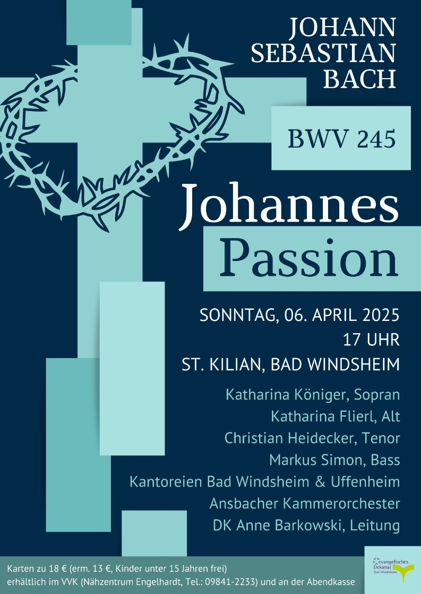
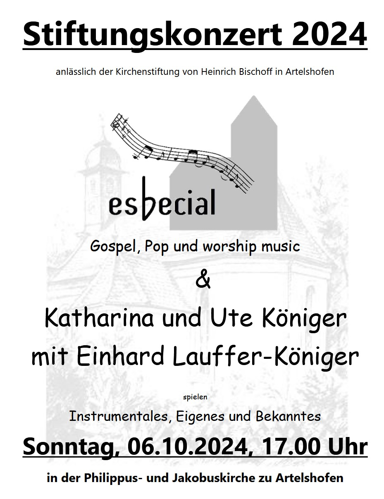

Katharina Königer
Sopran · Klassischer Gesang · Konzert & Oratorium
Sopran · Klassischer Gesang · Konzert & Oratorium
Katharina Königer ist eine klassisch ausgebildete Sopranistin mit Schwerpunkt auf barockem und geistlichem Repertoire. Ihre Ausbildung absolvierte sie an der Berufsfachschule für Musik Sulzbach-Rosenberg mit dem Schwerpunkt Gesang und Chorleitung sowie an der Hochschule für Musik Nürnberg, wo sie Gesang/Vokalpädagogik und Elementare Musikpädagogik mit besonderem Fokus auf Barockgesang studierte.
Als Sängerin ist sie regelmäßig als Solistin in Konzerten, Oratorien und kirchenmusikalischen Aufführungen zu hören. Ihre künstlerische Arbeit führt sie in verschiedene Kirchen und Konzertorte der Metropolregion Nürnberg und darüber hinaus.
Eine vollständige Repertoireliste ist auf Anfrage erhältlich.
Audio- und Videoaufnahmen werden in Kürze ergänzt.


Katharina Königer
Sopran
Region Nürnberger Land / Franken
E-Mail: [E-Mail-Adresse einfügen]
Anfragen für Konzerte, kirchenmusikalische Projekte und besondere Anlässe sind jederzeit willkommen.